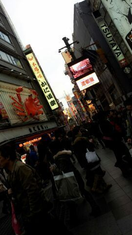
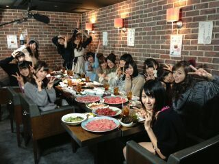

| 2013/01 04 Fri | あけましておめでとうごさまいま す。今年もよろしくお願い致します...(^ ω^) まひろってぃ〜 |

A happy new year ★★
2013 !!
今年一発目の
ろってぃ-blogだよっと♪
今日の昼
東京戻ってきましたー☆
お正月は 大阪で
ゆっくりしてきましたあ(´∀`)/
久々帰って
まったりできました(＊´ω`＊)
小,中学校の友達,,.
高校の友達。
久々に会えて
本間嬉しかった...( /ω`。)涙
(T^T)ウルウル
一緒にいっぱいいっぱい
歩いたり
カフェで
お互いのこと
話したり 聞いたり
お家お邪魔させてもらって
ご家族さんとも会えて...
昨日 の夜は
中学3年１組の
クラスメイトで
集まりました＊^^＊
懐かしいメンツ☆☆
あの
テンション,のり方
Sキャラ Mキャラだったり
そうゆうのが
ほんと 懐かしく感じて
本間楽しい時間を
過ごせました...( ´ω` )
撮ってきたよぉー★★
道頓堀!
カニ道楽本店!
これが本間の大阪の町や !(笑)

この辺で
お好み焼き食べてん〜(〃∀〃)
家族とも
長いこと過ごせました。
久々 姉♪とも
カラオケ行けたし
満足や ^^
なんといっても
ずっと楽しみにしていた
和歌山のじいじいん家に
行けたことが
めちゃめちゃ嬉しキモチ
wwww(・∀・)
１年ぶりに行ったら
皆元気そうでした＊^^＊
いとこの子供達も
大きなってました(^^)/
なにより
おせち料理が
おいしおいしっ♪)))
お正月☆・・・・
皆様,
正月太りしていませんかあ?笑
うー
んー
まひろは ちょっとやっぱ
増えたねっっ(笑)
やばたん♪。
すーぐ戻しまぁ〜すっ(＊^^＊)笑

↑この写真は
『乃木坂ってここ。』ねん♪
公式ホームページで
やっている番組です !
是非チェックしてねんっ
(^-^)v
とゆうことでっ、
今年の抱負,目標などなども
次の記事に書こうかと
思いますっ )))
明日から２日間
握手会だっ(〃ω〃)
朝早いので
ろってぃ-寝ようかなん(´ω`)
皆 大好きだよん♪
おやすみなさい(〃ω〃)
のし
コメント(202)
2013/01/04 23:54